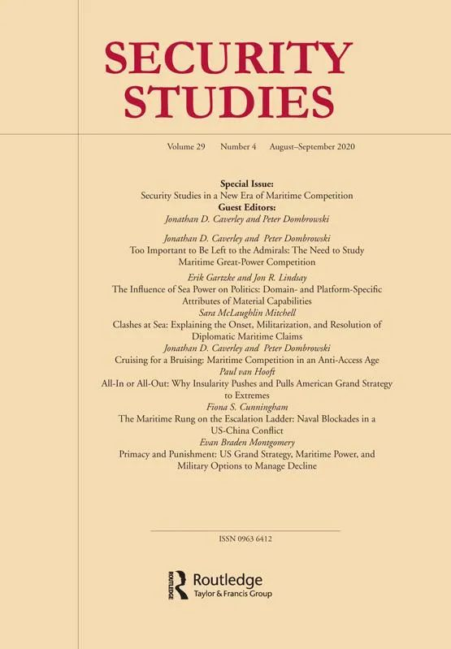

收录于合集 #新刊速递 123个

期刊简介

《安全研究》收录出版创新性的学术稿件——无论是理论研究、实践经验分享还是两者兼而有之。安全研究包含广泛的议题，从核扩散、核威慑、军民关系、战略文化、种族冲突、流行病与国家安全、民主政治、外交决策到定性与多方法研究的发展。根据2019年的Journal Citation Reports显示，其2019年的影响因子为2.167，在95种国际关系类期刊中排名第21。
本期编委
【编译】 黄慧彬 戴 赟 冯毓婧 吕紫烟 伍雨荷 杨沛鑫 阮辰阳
【审校】 王国欣 邵 良 姚寰宇
【排版】 苏语涵
本期目录
1. 研究海洋大国竞争的必要性
Too Important to Be Left to the Admirals: The Need to Study Maritime Great- Power Competition
2. 海权对政治的影响：物质能力的领域与平台特性
The Influence of Sea Power on Politics: Domain- and Platform-Specific Attributes of Material Capabilities
3. 海上冲突：解释海洋外交主张的产生、军事化与解决方法
Clashes at Sea: Explaining the Onset, Militarization, and Resolution of Diplomatic Maritime Claims
4. 自讨苦吃：反进入时代的海上竞争
Cruising for a Bruising: Maritime Competition in an Anti-Access Age
5. 全面投入还是彻底退出：地缘性隔离如何致使美国宏观战略剑走偏锋
All-In or All-Out: Why Insularity Pushes and Pulls American Grand Strategy to Extremes
6. 海洋阶梯的升级：中美冲突中的海上封锁
The Maritime Rung on the Escalation Ladder: Naval Blockades in a US-China Conflict
7. “美国优先”与惩罚措施：美国大战略，海上强国与管理衰落的军事手段
Primacy and Punishment: US Grand Strategy, Maritime Power, and Military Options to Manage Decline
01
研究海洋大国竞争的必要性
【题目】 Too Important to Be Left to the
Admirals: The Need to Study Maritime Great-Power Competition
【作者】 Jonathan D. Caverley & Peter
Dombrowski，美国海军战争学院战略与作战研究部的教授。
【摘要】 二战后一个崛起国和一个正在衰落的守成国之间最有可能产生摩擦的点，首次可能出现在海洋领域。据此本期特刊试图为安全研究设定一个合适的议程。本期特刊提供了六篇相互关联的文章，它们探讨了海洋竞争的不同维度，主要围绕中美两国。文章共使用了三种重要的安全研究方法：定量分析，将经典国际关系理论与定性证据相结合，以及操作化层面的研究。综合起来，它们考虑了不同的地缘位置——西太平洋地区与大中东地区之间的竞争和冲突；不同的问题领域，如对海上交通线路的法律主张和控制；最后还有海军力量的不同用途——包括封锁，海军外交，舰队交战和核升级。本期杂志鼓励将许多安全研究的经典方法应用于这组高风险的关系，同时将海洋冲突与其他形式的冲突进行区分，例如传统占据安全领域的陆地和核冲突。
For the first time since World War II the most likely friction points between a rising, potentially revisionist power and a declining, largely status-quo power are located at sea. This special issue accordingly seeks to set an appropriate agenda for security studies research. It presents six interconnected articles exploring different dimensions of maritime competition, largely between China and the United States. Between them, the articles employ three important approaches to security studies: quantitative analysis, pairing classic international relations theory with qualitative evidence, and operational-level research. Together, they consider different geographies—competition and conflict in the Western Pacific versus in the greater Middle East; different issue areas such contending legal claims and control over sea lines of communication; and, finally, different uses of naval power—including blockades, naval diplomacy, fleet engagements, and nuclear escalation. Combined, the issue encourages applying the many classic approaches of security studies to this high-stakes relationship while considering maritime conflict as distinct from other forms, such as land and nuclear, that have traditionally occupied the field.
【编译】 黄慧彬
【校对】 姚寰宇
02
海权对政治的影响：物质能力的领域与平台特性
【题目】 The Influence of Sea Power on
Politics: Domain- and Platform-Specific Attributes of Material Capabilities
【作者】 Erik Gartzke 加州大学圣地亚哥分校政治学教授。Jon R. Lindsay 多伦多大学蒙克国际研究中心和政治学系数字媒体与全球事务助理教授。
【摘要】 研究世界政治的学者们长期以来一直对海权表现出特殊的兴趣。然而，在国际关系中，权力手段往往是同质且可互换的。军事能力在很大程度上是无差别的商品，还是对政治有影响的特定资产?我们认为，海军力量的特征在战争起因方面提供了独特的权衡。海军的存在、火力和机动性使海上强国能够在远离本土的地方作战，并获得更多的外交承认。与此同时，海军的流机动性和隐蔽性给国家优先事项带来了不确定性，并导致在评估当地力量平衡和决心时出现错误。根据经验，我们发现，对海上力量的过度投资不仅与海权主义者所期望的更高的外交承认和更远距离的力量投射有关，而且还与争端爆发的高风险带来的不稳定性的增加有关。以战舰、潜艇、航空母舰这种平台类型来进行海上力量的划分表明，平台之间的权衡与一般的海军情况类似。海权能够使政治领导人干预利益相对次要的遥远地区，并在其利益并未证明存在风险时重新考虑其承诺。这导致一种违背直觉暗示，依靠海权进行威慑的离岸平衡战略实际上可能会破坏稳定。
Students of world politics have long shown a special interest in sea power. International relations, however, tends to treat the means of power as homogeneous and interchangeable. Are military capabilities largely undifferentiated goods, or do specific assets matter for politics? We argue that the characteristics of naval power offer distinctive tradeoffs in terms of the causes of war. Naval presence, firepower, and mobility enable naval nations to fight farther from home and obtain more diplomatic recognition. At the same time, mobility and stealth introduce ambiguity about national priorities and contribute to errors in assessing the local balance of power and resolve. We find empirically that disproportionate investment in sea power is associated not only with heightened diplomatic recognition and power projection across greater distances, as navalists expect, but also with increased instability in the form of a higher risk of dispute initiation. Disaggregating sea power by platform type—battleships, submarines, aircraft carriers—suggests similar tradeoffs across platforms as for navies generally. Sea power enables political leaders to intervene in distant locales, where their interests are more peripheral, and to reconsider their commitments, where their interests do not justify the risk. One counterintuitive implication is that offshore balancing strategies, which rely on sea power for deterrence, may actually be destabilizing.
【编译】 戴赟
【校对】 王国欣
03
海上冲突：解释海洋外交主张的产生、军事化与解决方法
【题目】 Clashes at Sea: Explaining the
Onset, Militarization, and Resolution of Diplomatic Maritime Claims
【作者】 Sara McLaughlin Mitchell, 爱荷华大学政治学系教授。
【摘要】 海上争端在全球政治中占有重要地位，但我们还没能充分了解这些争端是如何产生的，以及海上争端为什么会演变为军事冲突。自1991年以来，中国与周边国家的海上争端（如钓鱼岛、南沙群岛问题）已经引发了了十几次海上军事冲突。2018年11月俄罗斯和乌克兰在刻赤海峡的对峙，也让人们担忧局势是否会升级为国家间战争。海上外交冲突频发：“战争关联计划（Correlates of War Project）”识别出从1900年至2010年全球范围内270起关于海域的双边外交声索分歧，其中近三分之一的外交分歧演变成军事冲突。本文探讨了各国出现海上外交分歧和部分外交分歧演变成军事冲突的原因，以及各国和平解决这些冲突的方法。本文的理论模型是基于世界政治的问题方法提出的。实证分析表明，平均来说，资源（石油、鱼类资源、矿产资源等）比较突出，且曾经军事化的海域更容易出现暴力冲突。拥有更强大海军能力的国家对近海海域会提出更多的声索，并使用更多的强制性策略，除非他们的对手是海军实力相近的国家。与陆地争端不同的是，海上冲突更容易发生在民主的发达国家之间，并且更容易通过多边机构成功解决。调查结果展示了海上外交声索分歧可能成为大国之间海上冲突爆发点的条件。
Maritime disputes feature prominently in global politics, but we lack full understanding about how they arise and why they are militarized. China’s maritime conflicts with neighboring states (for example, Senkaku/Diaoyu, Spratly Islands) have generated over a dozen militarized clashes at sea since 1991. Confrontations in the Kerch Strait between Russia and Ukraine in November 2018 created similar concerns about the escalation of the situation to interstate war. Maritime diplomatic clashes are frequent; the Issue Correlates of War Project identifies 270 dyadic diplomatic claims over maritime areas globally from 1900 to 2010, with close to a third of these disagreements becoming militarized. This paper explores why countries experience diplomatic disagreements over maritime zones, why some maritime claims are militarized, and how countries can peacefully resolve these conflicts. The project is situated theoretically in the issue approach to world politics. Empirical analyses show that maritime areas with more salient resources (oil, fish stocks, minerals, etc.) and previous militarization become more violent on average. States with greater naval capabilities make more claims to offshore maritime areas and use more coercive strategies unless they face countries with similar naval strength. Unlike territorial disputes, maritime conflicts are more likely to occur between democratic, developed states and are more successfully settled through multilateral institutions. The findings show the conditions under which maritime claims may become a flashpoint for broader clashes at sea between major powers.
【编译】 冯毓婧
【校对】 邵良
04
自讨苦吃：反进入时代的海上竞争
【题目】 Cruising for a Bruising: Maritime
Competition in an Anti-Access Age
【作者】 乔纳森·斯海利（Jonathan D.
Caverley）、彼得·东布罗夫斯基（Peter Dombrowski），美国海军战争学院战略与作战研究部教授。
【摘要】 本文以现有关于中美海军平衡以及防御- 进攻理论的研究为基础，探讨了中美海上危机的稳定性。尽管安全研究领域的“否认派”认为，反干预技术使得防御在该地区占据主导，但美国海军仍然是一支旨在进行军力投射与海上控制的攻击型舰队。高超的反介入能力，加上强大的运营文化与官僚激励，使得这种观点变得更加顽固。然而，本文仍然假设附加力量证明，防御主导并不一定会带来危机稳定。在海上，攻防区分能力弱，先发制人诱惑大。中美对于当前舰队设计与未来互动可能引发危机甚至战争，这会危及美国舰队，甚至使美国丧失绝对军事优势，威胁美国霸权，而这正是美国海军一直以来旨在维护的。
This paper explores the likelihood of maritime crisis stability between China and the United States by building on existing research on the Sino-American naval balance and the concepts of offense–defense theory. Whereas a “denialist” school in security studies argues that counter intervention technology makes defense dominant in the region, the US Navy remains a fleet designed for an offensive approach of power projection and sea control. Although this stubbornness in the face of a sophisticated anti-access capability might be attributable to a strong operational culture and obvious bureaucratic incentives, we posit additional forces suggesting defense dominance will not lead to crisis stability. At sea, offense–defense distinguish ability is low and the temptation to strike first is high. Future interaction between current US and Chinese fleet designs risks a crisis or even war that will endanger the US fleet, potentially leading to the loss of the very military advantages underpinning American hegemony that its navy seeks to defend.
【编译】 吕紫烟
【审核】 姚寰宇
05
全面投入还是彻底退出：地缘性隔离如何致使美国宏观战略剑走偏锋
【题目】 All-In or All-Out: Why Insularity
Pushes and Pulls American Grand Strategy to Extremes
【作者】 Paul van Hooft，美国麻省理工学院安全研究项目博士后研究员，海牙战略研究中心（HCSS）高级分析师。
【摘要】 对于美国扩张性宏观战略的批评者认为，美国应采取紧缩战略，避免与大国的冲突和盟国的搭便车。支持裁军者则认为，美国可以依靠本国与其他主要大国之间的地缘性隔离所固有的安全性，在非必要的情况下推迟可能的干预措施。如果欧亚大陆上有霸权国家崛起，该国对海上公域的控制性将使美国选择重返亚太。本文认为，对美国而言这样的战略在亚洲不太可能成功，但如果美国继续深度参与亚太事务，中美矛盾也不可避免将走向升级。鉴于美国地处偏远，美国与其盟国和对手之间的利益平衡本质上是不对称的，这一点也反过来使得美国的对手和盟国、甚至国内民众都难以信服，美国确实愿意在亚太地区投入人力物力。因此，在美国的宏观战略中，国外的纠缠和国内的倾销仅仅是地方性的。美国参与欧洲冷战的历史表明了美国的承诺如何在极端状况之间摇摆。本文阐明了这种动态变化如何应用于西太平洋地区的中美竞争：中国试图提高美国的成本，而美国则试图保持军事技术优势以维持准入。如果美国以维护力量平衡为己任，那么它必须准备好挑起祸端，将中国视为生存威胁。因此，美国在亚洲地区的危险升级和全面撤退之间面临严峻的选择。
Critics of the expansive US grand strategy of deep engagement argue that the United States should pursue strategies of retrenchment to avoid provoking conflicts with major powers and allied freeriding. Retrenchers believe the United States can rely on the inherent security its insularity and distance from other major powers provides and delay its possible interventions until strictly necessary. Should a hegemonic power emerge in Eurasia, its command of the maritime commons will allow US reentry into the region. This paper argues that such strategies are not likely to succeed for the US in Asia, but neither is the US likely to avoid escalation with China if it continues deep engagement. The balance of interests between the United States and its allies and adversaries is inherently asymmetric because the United States is a distant, offshore power. This in turn makes it difficult to convince adversaries and allies that it is willing to spend blood and treasure and to convince the domestic audience of the need to do so. Entanglement abroad and overselling at home are thus endemic in the US grand strategy. The history of US engagement in Cold War Europe illustrates how US commitments swung between the extremes of the pendulum. This paper shows how this dynamic applies to the Sino-American competition in the Western Pacific, where China seeks to raise the costs for the United States, and the United States seeks to maintain military-technological superiority to maintain access. If the United States is committed to upholding the balance of power, it must be willing to court disaster and treat China as an existential threat. In Asia, the former thus faces a stark choice between dangerous escalation and retreat.
【编译】 伍雨荷
【校对】 姚寰宇
06
海洋阶梯的升级：中美冲突中的海上封锁
【题目】 The Maritime Rung on the Escalation Ladder: Naval Blockades in a US- China Conflict
【作者】 Fiona S. Cunningham（乔治·华盛顿大学）。
【摘要】 大国在不诉诸核威胁的情况下，有哪些选择可以结束未来因有限的政治目标而发生的冲突？本文提出将海上封锁作为军事威压的一种方案，尽管在现有学者关于核时代大国冲突升级的研究中经常将其忽视。一些美国学者建议在未来战争爆发时可以对中国商船进行海军封锁以对中国进行威压。这可能会成为美国领导人备选的方案，因为他们相信这会比对中国本土发起常规打击陷入核升级的风险更低，比直接介入中国海空军在中国沿海的军事活动的成本更低。中美都不愿意在未来有关台海、朝鲜半岛或其他海洋领土争端中卷入一场核战争以实现有限的政治目的。现有的研究虽然针对采取封锁战略改变中国行为的可行性提出了疑问，但是没有对具体的封锁战略以及中国的军事反应做出具体分析。本文认为在东南亚的海峡采取一种致力于最小化危险升级的“拦截式”封锁是有效的，但这对美国海军提出了极高的要求，同时需要其他国家的有力支持。关于这一议题的中文材料中指出中国可以通过增加非核武器的使用来应对封锁，这种方法比使用核武器更好，因为后者会使美国对中国本土发起攻击。
What options do great powers have to end future conflicts over limited political objectives without resorting to nuclear threats? This article examines a naval blockade as an option for militarized coercion that has been largely overlooked in existing scholarship on the conflict escalation ladder for great-power war in the nuclear era. Some US scholars have recommended a naval blockade of Chinese merchant shipping to coerce Beijing in a future war scenario. US leaders might select this blockade option because they believe it poses a lower risk of nuclear escalation than conventional strikes on the Chinese mainland and lower costs than directly engaging Chinese air and naval forces off China’s shores. Neither China nor the United States might be willing to risk nuclear war to achieve their limited political aims in future conflicts over Taiwan, North Korea, or disputed maritime territories. Existing literature has not sufficiently scrutinized the feasibility of a blockade and China’s military plans to respond to it, despite raising doubts about the effectiveness of a blockade to force a change in Chinese behavior. This article argues that an interception-style blockade at the Southeast Asian straits designed to minimize escalation risks is feasible. But the campaign would place severe demands on US naval forces and require extensive support from other countries. Chinese-language materials suggest China could respond militarily to that campaign with intentional escalation using nonnuclear weapons, which may be preferable to inadvertent nuclear use that could result from a US attack on the Chinese mainland.
【编译】 杨沛鑫
【校对】 姚寰宇
07
“美国优先”与惩罚措施：美国大战略，海上强国与管理衰落的军事手段
【题目】 Primacy and Punishment: US Gra-nd Strategy, Maritime Power, and Military Options to Manage Decline
【作者】 Evan Braden Montgomery（美国战略与预算评估中心）。
【摘要】 美国所面临的最重要的外交政策决定或许在于决定维持其全球安全承诺还是从关键区域收缩。尽管“美国优先”的支持者乐观地认为美国的实力将继续领先其竞争对手，持保守观点者对前景却表现出悲观态度。然而，作者想要说明的是，以上两派之间的辩论忽略了地缘政治导向的重要性。诸如美国等海上强国需要同时与多个对手进行频繁竞争，尤其是考虑到针对不同对手采用相似军事手段的倾向时，这种频繁竞争会导致相互依赖性的承诺履行问题，使得“美国优先”的战略难以维系并提升实施这一战略的危险性。但是，正在衰落的海上强国可以以非战略收缩的方式做出回应，这主要是因为这些国家的海军力量提供了维持义务履行的诸多手段。之于美国，以上论断表明华盛顿政府需要使自身的防卫战略多元化而非抛弃既有承诺。举例来说，美国在中东可以通过海上封锁的方式对伊朗实施惩罚而非实行拒止战略以防范伊朗，不仅因为前者相比后者需要更少的高价值的军事资产，而且前者可以使美国避免某些降低其应对更高优先级别威胁之姿态的冲突。
Perhaps the most significant foreign policy decision facing the United States is whether to retain its global security commitments or retrench from key regions. Although primacists are optimistic that the United States will remain ahead of its rivals, restrainers are more pessimistic about its prospects. I argue instead that this debate overlooks the importance of geopolitical orientation. Maritime powers such as the United States are frequently in competition with multiple adversaries at once. This introduces an interdependent commitment problem that makes primacy difficult to sustain and dangerous to enforce, especially given the propensity to employ similar military approaches against different opponents. At the same time, maritime powers experiencing decline can respond in ways that fall short of retrenchment. This is mainly because their naval forces provide many options for upholding their obligations. Applied to the United States, these arguments suggest Washington might choose to diversify its defense strategy rather than abandon its commitments. In the Middle East, for example, it could rely on punishment via naval blockade rather than denial against Iran, not only because the former strategy would require fewer high-value military assets than the latter but also because it might allow the United States to avoid the types of clashes that would undermine its position relative to higher-priority threats.
【编译】 阮辰阳
【校对】 王国欣
**
**
**
**
**
**
添加 “国小政”微信
获取最新资讯


国政学人
支持学术公益与知识传播
微信扫一扫赞赏作者 __赞赏
已喜欢，对作者说句悄悄话
取消 __
发送给作者
发送
最多40字，当前共字
上一页 1/3 下一页
长按二维码向我转账
支持学术公益与知识传播
受苹果公司新规定影响，微信 iOS 版的赞赏功能被关闭，可通过二维码转账支持公众号。